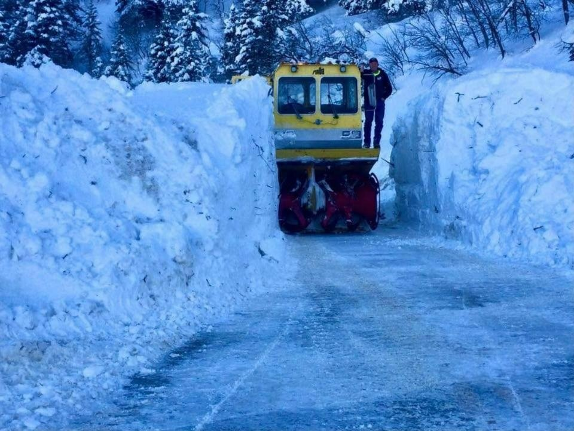
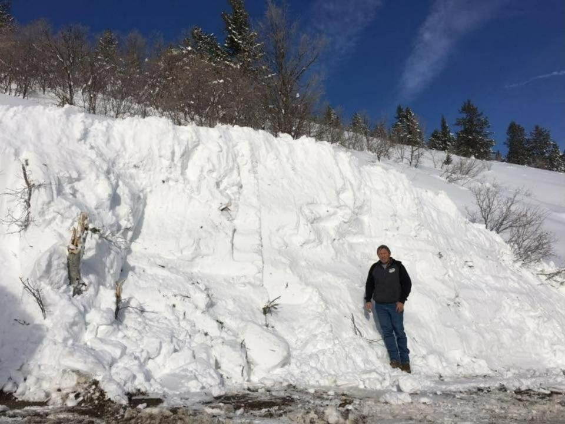
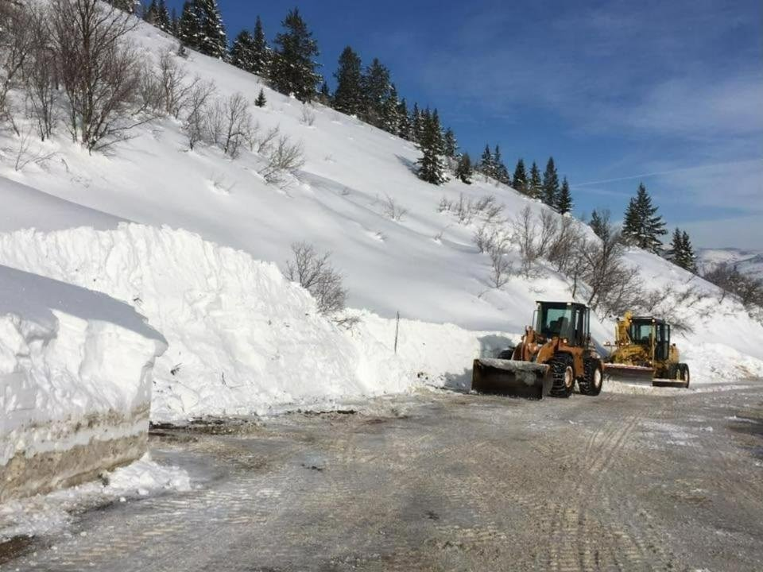
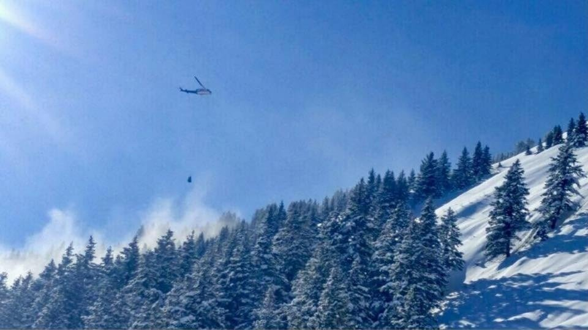
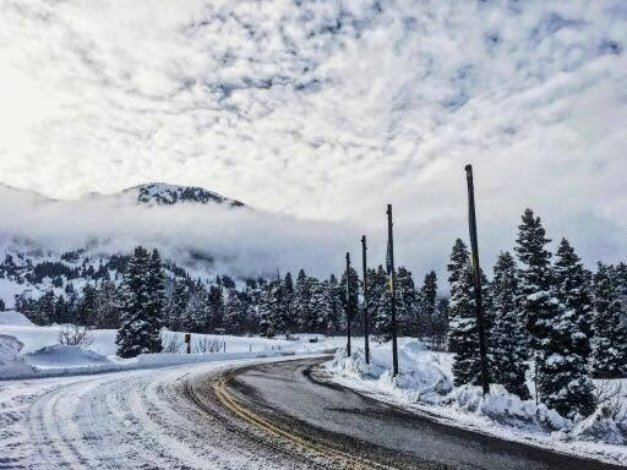
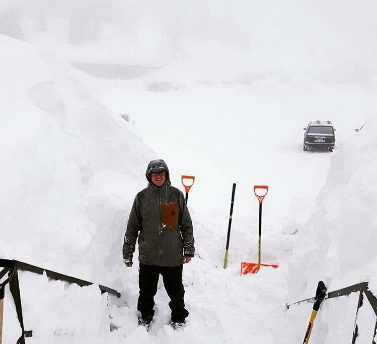
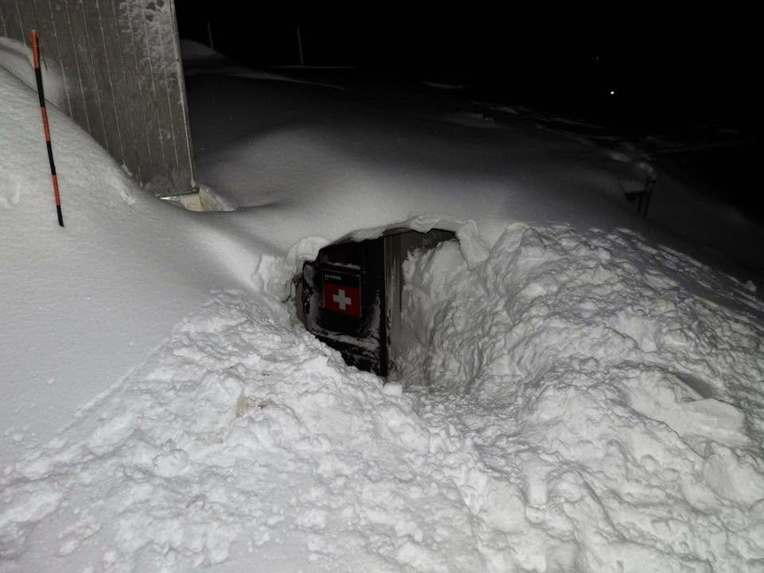
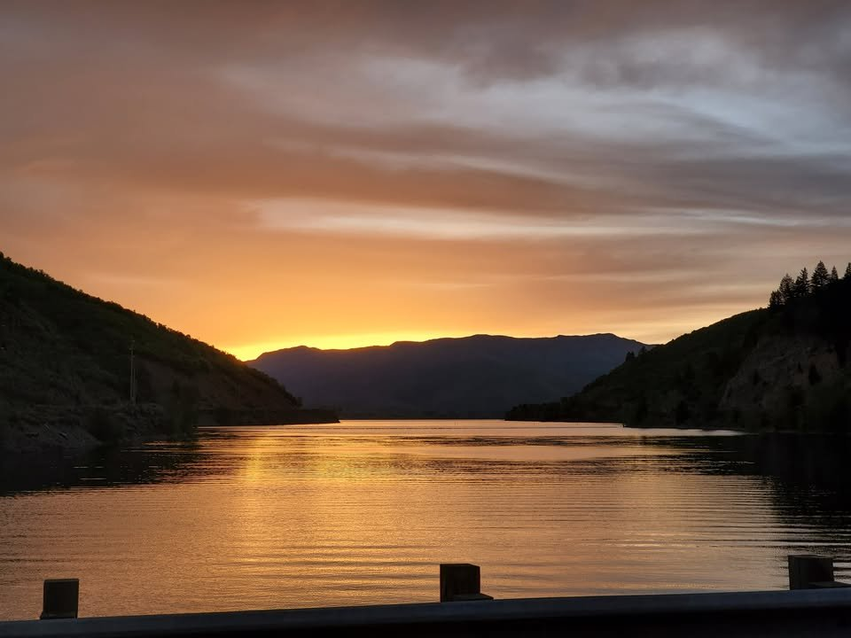

1857–1860
Settlers arrive
Families settle the Eden area from 1857, Liberty in the winter of 1859, and Huntsville in the fall of 1860, when seven families, including Jefferson Hunt, the town's namesake, arrived.
2016–2026
A short look back at the Valley's story, ten years of sharing what's happening here, and reader photos of the Valley over the years.
Families settle the Eden area from 1857, Liberty in the winter of 1859, and Huntsville in the fall of 1860, when seven families, including Jefferson Hunt, the town's namesake, arrived.
The saloon in Huntsville opened in 1879 and is described as Utah's oldest continuously operating saloon.
Huntsville first incorporated in 1903, disincorporated in 1909 and reincorporated in 1924.
Construction began in 1934 and the dam was completed in June 1937. It was later raised from 103 to 137 feet, more than doubling the reservoir.
Ogden dedicated its “Snow Basin Winter Playground” on Nov. 27, 1940.
Nordic Valley opened in 1968 with a tow rope on a sledding hill. Powder Mountain opened in 1972.
Snowbasin hosted six alpine events at the 2002 Salt Lake Winter Games: downhill, super-G and combined for men and women.
Weber County's North Fork Park was named an International Dark Sky Park.
The Facebook page starts sharing upper Valley news and events.
On Nov. 5, 2024, Ogden Valley voters approved forming a new city covering Eden, Liberty and Wolf Creek. Huntsville stays its own town.
The new city's first mayor and council were sworn in in November 2025.
Ogden Valley Info & Events relaunches with this site: calendars for your phone, a weekly newsletter, a photo contest and Valley listings. About 14,000 people follow on Facebook.
Reader photos
Photos of Huntsville, Eden, Liberty, Wolf Creek and Pineview shared with us by readers and local agencies, with the date each one was posted and who took it. Each month a new set gets the spotlight, and past sets move to the archive by year. Have one to add? Send it in and we will credit you by name.
In the spotlight
The winter of 2017 buried the upper Valley. Up Wolf Creek, the snowbanks stood taller than a grown man, and crews ran loaders and a rotary blower to keep the roads open.







Tap a year to see its photos.
Spring 2020. A spring sunrise at the canyon end of Pineview Reservoir, sent to us by a reader.

Have a favorite Valley moment or an old photo from the last ten years? Send it in and we may add it here.
Send a memory or photo